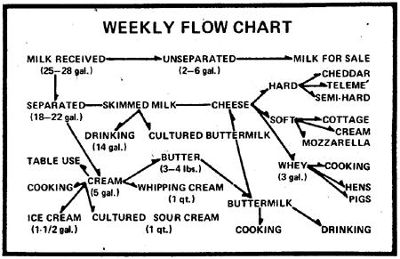

Maplevale Organic Farm in Cross Creek, New Brunswick is the home of Hal, and Judy Hinds and a training center for the techniques of rural self-sufficiency. (A letter to the Maplevale folks will bring you information on their Earth skills Workshop summer program.) Hal and Judy also find time to put out a fine little quarterly newsletter called Northwind, from which the following article is taken. Subscriptions are available at $3.00 a year from Maplevale Organic Farm, Cross Creek, New Brunswick, Canada EOH 1 E0.
The following material originally appeared in Northwind, Vol. III, No. 4, Cby Hal and Judy Hinds, and is reprinted by permission of the editors.
A single Jersey cow can provide an astonishing abundance of milk and milkbased products over a week's time. At the start of our one animal dairy venture, we sold some of the milk if we seemed to have an excess. Since late May of 1974, however, we've used it all ourselves by adjusting the supply to the needs of our ever expanding and contracting family and converting any surplus into various kinds of cheese.
In a given week Chloe, our cow, provides us with about 25 to 28 gallons of milk which we turn into the following dairy products:
[1] 10 to 14 gallons of skimmed, but still quite creamy, milk for drinking
[2] 3 to 4 pounds of butter
[3] 4 pounds of cottage cheese
[4] 4 pounds of semi-hard cheese
[5] 1-1 /2 gallons of ice cream
[6] 1 quart of sour cream
[7] 1 quart of very thick whipping cream
[8] As much cream as we wish for table use
[9] Plenty of buttermilk for drinking or cooking
[10] All the whey we can use for cooking (plus generous amounts that serve as valuable food for the pig and the poultry)
Management of the home dairy to produce such a wide variety of items requires the gathering of some equipment and the establishment of a few definite routines.
Our home dairy operation depends heavily on a number of containers: a milk pail, a small wash bucket used to hold bleach water at milking time, six to eight one-gallon jars, a cheese kettle (the four-gallon enamel canning type), pitchers, and ice cream freezing canisters. All these have to be washed carefully and are best air-dried on pegs (Hal made ours with 12-inch lengths of broom handles from the dump). A milk strainer and filters, lids for the jars, a colander, and wire racks should also be part of the dairy department.
A scoop, a ladle, and a rubber scraper are useful for separating cream from milk. (Nearly all the books on homesteading discourage the use of a cream separator on the output of a single cow because the device is so tedious to clean.).
If you plan to make butter, you'll need a churn of one kind or another. Ours is a six-gallon crock. The rest of the implements required for this operation are to be found in most farm kitchens: a large bowl in which to finish the butter, a colander, rubber scrapers, and a wooden paddle.
The cheese department should be provided with rennet tablets, which may have to be specially ordered by mail or through a drugstore. A dairy thermometer is also a great help to beginning cheese makers who, additionally, will need to devise a cheese press and find some bricks or other weights to use. on it, (We've adapted the discs from an old weight lifting set to this purpose.) Other necessities are yards of cheesecloth, a shallow but wide saucepan just for waxing (leave the wax in the container to be reheated when needed), and the usual colanders and wooden spoons. A good cheese making primer such as Phyllis Hobson's Making Homemade Cheeses and Butter ($2.50 from Garden Way Publishing, Charlotte, Vermont 05445) should be read and reread when you're first starting out,
The ice cream department needs large plastic bleach jugs or other containers in which to freeze water, a wooden mallet and burlap bags for crushing blocks of ice, rock salt, and whatever kind of freezer you can find (we have both an electric and a hand model).
Many steps take place between milking and the production of butter, ice cream, and cheese. We divide up the responsibility into a number of set routines most of which are one-person jobs and are easily taught to others. In this way our helpers, work shoppers, farm guests, and visitors can take up the patterns and carry on the work quite smoothly, with a minimum of supervision from Hal and me. In fact, if either or both of us must be away from the homestead, we feel confident that the dairy will continue to operate normally in our absence.
Although milking itself is perhaps the least interchangeable of routines, we've had at least three people other than Hal who could handle the job by themselves. At times there's been a drop in production due to the change in milkers but we feel that the value of the learning experience to the helpers, and Hal's option to do other things at chore time, justify the temporary decline.
To expedite the handling of our cow's yield once it reaches the kitchen, I've devised a mimeographed form called "Dairy Detail" (see sidebar with this article). In the evening I check off the various steps to be performed the following day, and indicate what is to be done with the morning milk.
Intakes just a few days to break a new person in to dairy work. Following is an overview of the various operations:
Our general procedure is to use morning milk for cheese making, and evening milk (skimmed) for drinking the following day. Letting milk stand overnight gives its cream ample time to rise naturally in readiness for the basic step of separation.
The incredibly thick top skim is saved for whipping and, since it beats up best when several days old, a supply is put by ahead of time if we'll be needing larger amounts than usual. The rest of the cream is taken to the churn in the spring room, one gallon at a time, until we have three gallons on hand for butter making. Or we set aside a gallon or so for a batch of ice cream, or put some in a large peanut butter jar with a scoop of buttermilk and let it develop into cultured sour cream.
If we make butter right before a meal, we can usually count on some extra help. The churn (which has been sitting on the back of the wood stove where it's given a quarter-turn every so often throughout the morning), will be pleasantly warm to the touch. At that temperature, only 10 or 15 minutes of work with the dasher are needed to make the butter come. When it does, the particles of solid fat show around the hole in the lid where the dasher handle goes up and down.
The next routine is to drain off the buttermilk and rinse the butter in the churn two or three times with a gallon of cold water per rinse. (The unwanted rinsing liquid is fed to the animals.) These steps go much better if done by two people one to lift the churn and pour, the other to hold a colander over the cheese kettle or pails
and guide the operation with a rubber spatula. After the washing, one person can press and squeeze excess liquid out of the butter in a large bowl, salt the spread, and wrap it or pack it in dishes while the other quickly runs the utensils through hot soapy water. The complete process, including cleanup, takes about an hour. (That last step, incidentally, is easier when a good crew is on hand for a "butter break" because everybody takes a piece of bread and uses it to wipe the fresh product off the bowls and churn!)
Skimmed milk-which still has a good amount of cream on it, since we don't extract all the richness with our hand skimming method-and buttermilk left over from churning are used to make cottage cheese, mozzarella, and other fresh cheeses. The liquid for this purpose is saved in a four-gallon cheese kettle over two or three milkings. (Storing the cream in the churn and the cheese making milk in the kettle cuts down on the number of jars we have to wash.) Cheeses intended to be aged keep better if made with whole milk, so the morning's yield is occasionally added-still warm-tb the batch just before clabbering.
The mix for ice cream has to be made up ahead of time the night before a batch is made or on the morning of the same day. Here's how I assemble the makings for a large batch of honey vanilla, to be made in both the one-gallon electric churn and the half-gallon hand model. The recipe uses a lavish amount of cream, which can be adjusted to a more modest level by those who have no cow.
(1-1/2 gallons)
[1] Pour one inch of cold milk into a large saucepan. Sprinkle over it about 3 tablespoons of unflavored gelatin. When the floating powder appears soft and humpy, heat the milk until the thickening agent is dissolved.
[2] Remove the milk from the heat, add 2 cups of honey and 6 eggs, and beat immediately until the ingredients are well blended. Mix in 1 quart of cream and 2 teaspoons vanilla (or, better yet, a 1-inch length of vanilla bean thoroughly crushed). Refrigerate the mixture until it sets.
[3] just before cranking time, line up the ice-cream freezers' canisters, a gallon jug of cream (you won't use it all), a blender, any fruit you may care to use, and the jelled mix. Plop a mass of the thickened ingredients into the blender, add lots of cream, blend, and divide the result among the canisters. Whip up the fruit-2 cups of berries or canned pineapple is a good amount-with more cream, and distribute the product among the containers as before. Continue until you've used all the gelatin combination (taste for sweetness toward the end and add more honey if necessary). Pour cream into the canisters until they're three-quarters full. Then put in the dashers and summon the cranking committee.
The other steps in ice cream making-freezing blocks of ice ahead of time, crushing the ice, and packing it into the freezers alternately with the salt-are, or can be, separate routines parceled out to whomever is around. Children, of course, like to make a special job of licking the dashers.
Finally, here's an easily made treat to be enjoyed between ice cream projects:
[1] Pour warm milk into a serving dish (large or small, depending on your crowd). Sweeten the mixture to taste with honey and flavor it with vanilla.
[2] Stir in 1/4 rennet tablet, dissolved. Let the pudding set 30 minutes and serve with fruit.
With proper equipment on hand and good routines established, the home dairy can be wonderfully productive. Here at Maplevale, we've found that we appreciate our fine dairy products even more when everyone present understands how they're made and helps to do the work.
|
 |
|
|